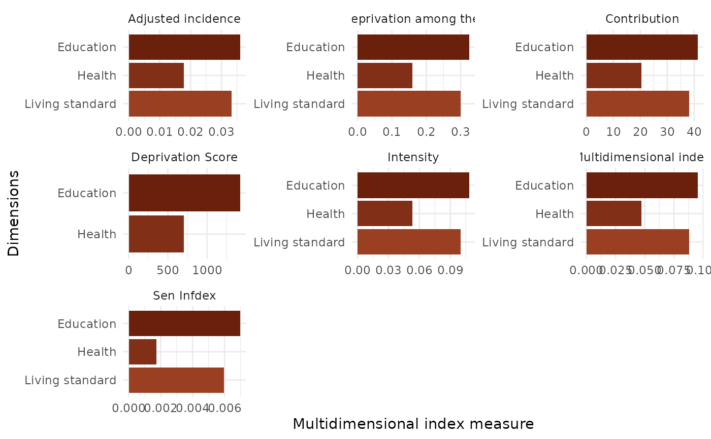
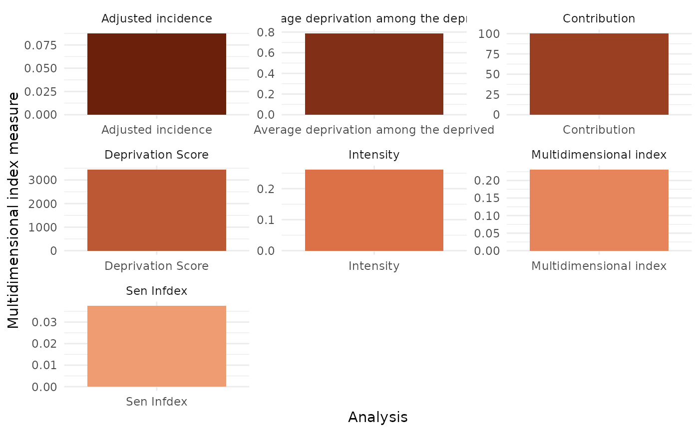

Plots of Multidimensional Index Measures
Arguments
- data
Data frameof Multidimensional Index measures which is an object frommdi- kala
color palette with at least 15 colors but must be equal or higher than the number of options in the factor argument
- dma
number of
Dimensionsinvolved in the computation of Multidimensional Index measures.- factor
the optional grouping factor used in the computation measures. If not supplied only the national plots will be produced irrespective of whether the factor was used in the computation.
Value
A list of the following plots:
Multidimensional indexplot.
Deprivation Scoreplot.
Adjusted incidenceplot.
Intensityplot.
Average deprivation among the deprivedplot.
Contribution of each Dimensionplot.
combined dimensionsplot.
nationalplot.
combined dimensions of nationalplot.
Examples
# data from `mpitbR` package
data <- mdpi2
dm <- list(d1 = c("d_nutr","d_cm"),
d2 = c("d_satt","d_educ"),
d3 = c("d_elct","d_sani","d_wtr","d_hsg","d_ckfl","d_asst"))
dp <- mdi(data, dm, plots = "t")
#>
#>
#>
#> New names:
#> • `` -> `...1`
#> • `` -> `...2`
#> • `` -> `...3`
#> New names:
#> • `` -> `...1`
#> • `` -> `...2`
#> • `` -> `...3`
#> New names:
#> • `` -> `...1`
#> • `` -> `...2`
#> • `` -> `...3`
#>
#>
#>
#>
#>
#>
#>
library(MetBrewer)
kala <- met.brewer("OKeeffe1", 20, type = "continuous")
dma <- 3
plot_mdi(dp$national, kala, dma)
#> Warning: `plot_mdpi()` was deprecated in Dyn4cast 11.11.28.
#> ℹ Please use `plot_mdi()` instead.
#> $national_only

#>
#> $combined_national_only

#>